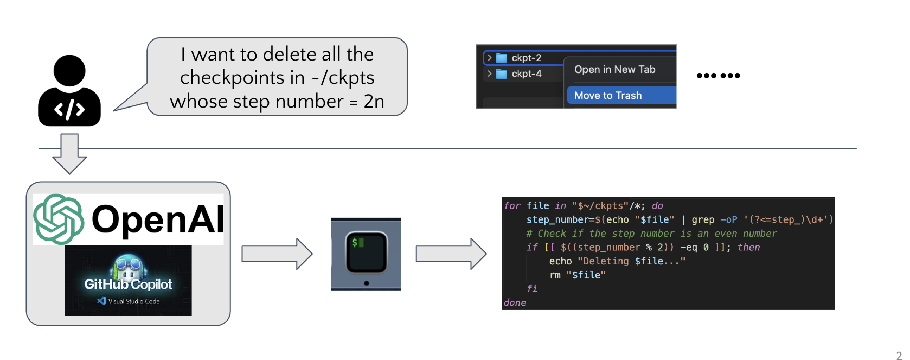
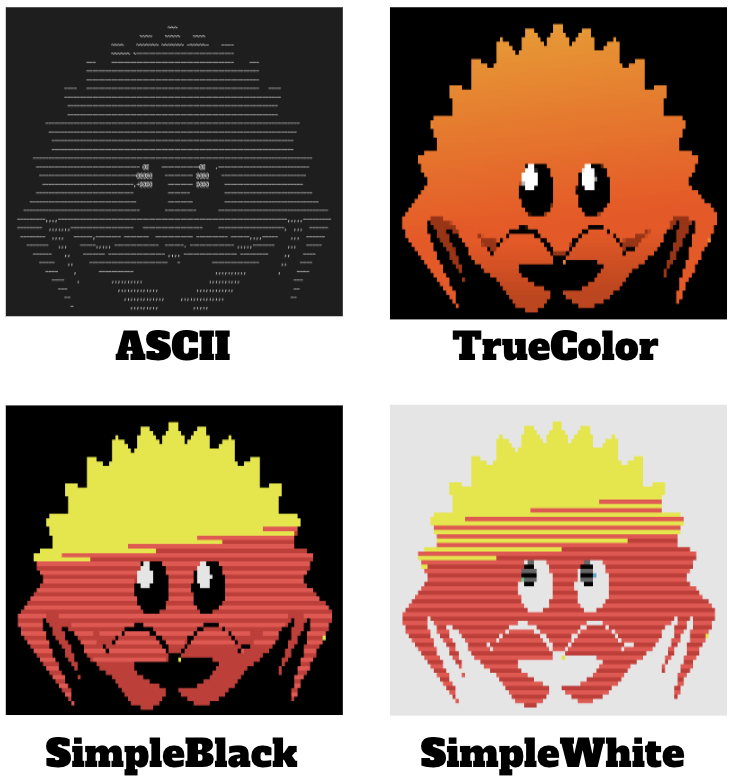
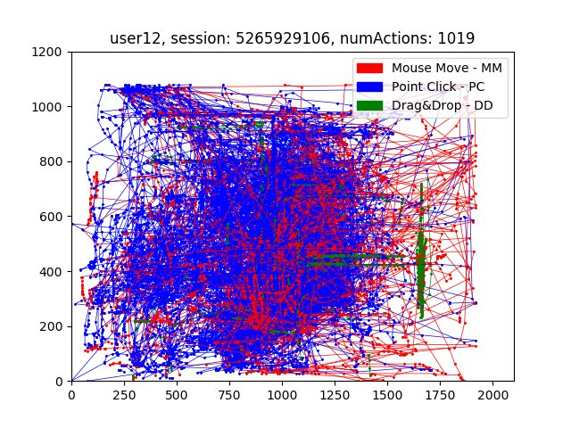
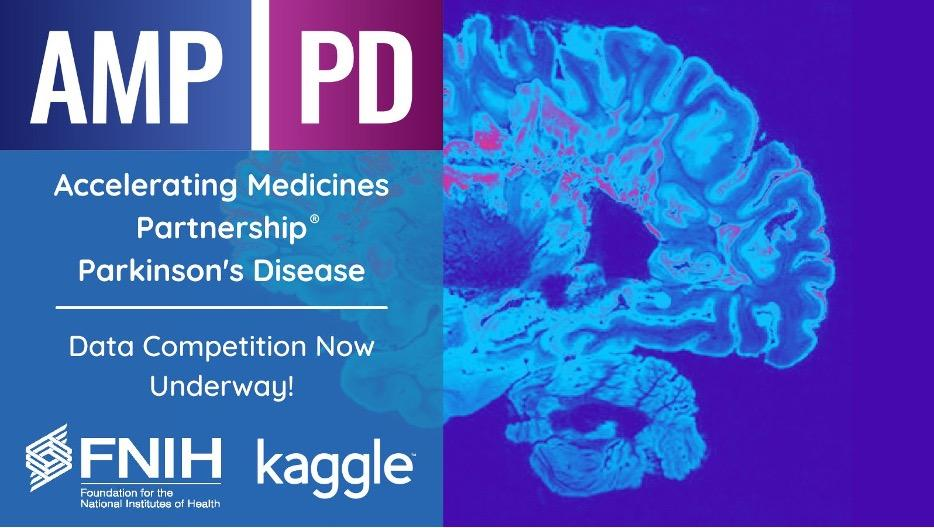

" Hello! I'm Silin Meng.
I'm currently pursuing my Master's in Computer Science at the University of California, Los Angeles (UCLA).
I proudly hold a Bachelor's in Computer Science from San Jose State University, where I was honored with Summa Cum Laude distinction.
Throughout my academic journey, I've actively participated in the Machine Learning Clubs at both UCLA and San Jose State, consistently
expanding my knowledge and honing my skills through project work and research. I specialize in the design and application of machine learning
models and data science techniques, primarily using the Python programming language and its robust libraries.
Below, you'll find a curated selection of my most recent endeavors, as well as notable past projects. Thank you for exploring my website! :)"
RECENT WORK

Large Language Model Based Route Planning of Drones in the Urban Scenario

Large Language Model Based Office Agent and Performance Benchmark
Projects
ImgCatr

" This project is
a open-sourced CLI application written in rust programming language for displaying images on terminal,
supporting latest Linux, MacOS, and Windows. Features such as output format, size, images ratio are available for customization.
CI/CD pipeline with GitHub Actions is implemented to simplify the development. Release.yaml publishes a new release everytime the new version is pushed with the tag keyword.
Meanwhile Publish.yaml calls "Cargo publish" to publish the new version of crate to Crate.io.
"
NLP-Based User Authentication Through Mouse Dynamics

" This project,
supervised by a university professor specializing in cybersecurity, involved
the development of three machine learning models to authenticate users through mouse
dynamics datasets. I authored a comprehensive academic report detailing the experiments.
The models I explored and evaluated are SVM, CNN+LSTM, and CNN+BiLSTM. Through this endeavor,
I gained a profound understanding of advanced deep neural network models and techniques
tailored for sequential data.
"
AMP-Parkinson's Disease Progression Prediction

" In this project,
we analyzed diverse datasets encompassing peptides, proteins, clinical, and
supplemental patient data. Our goal was to enhance predictions of Parkinson's
symptom levels across four distinct categories. As a member of the ML CLUB, I
collaborated with a team of 10 on comprehensive Exploratory Data Analysis (EDA)
and model selection. Notably, we surpassed the benchmark sMAPE score of 69.51,
achieving a commendable 67.62—indicating that lower scores are preferable.
"
Silin Meng